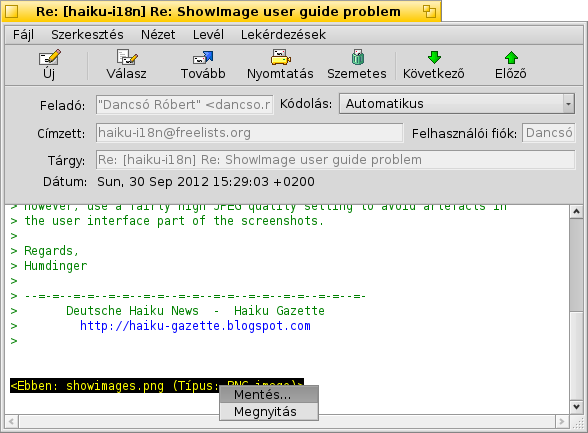
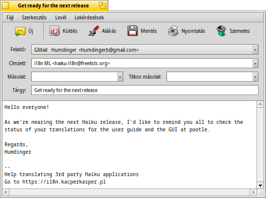
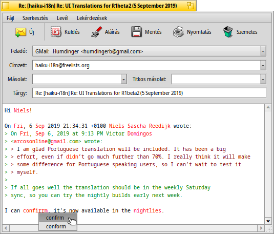
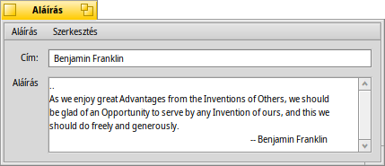
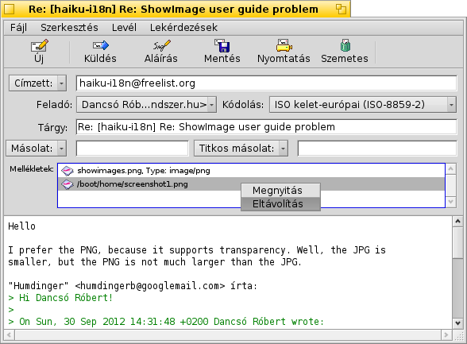
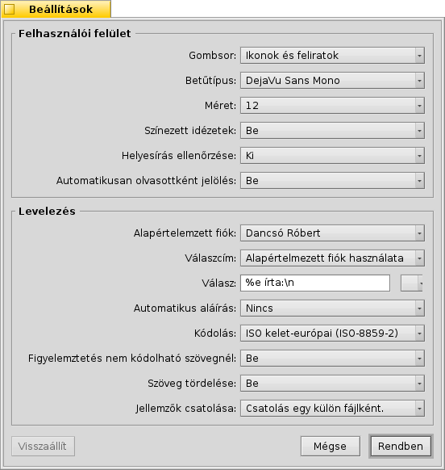

Magyar
Magyar Français
Français Deutsch
Deutsch Italiano
Italiano Русский
Русский Español
Español Svenska
Svenska 日本語
日本語 Українська
Українська 中文 ［中文］
中文 ［中文］ Português
Português Suomi
Suomi Slovenčina
Slovenčina Português (Brazil)
Português (Brazil) English
English| Index |
| Levelek olvasása Levél írása Beállítások |
 Levelezés (Mail)
Levelezés (Mail)
| Asztalsáv: | ||
| Útvonal: | /boot/system/apps/Mail | |
| Beállítások: | ~/config/settings/Mail/ ~/config/settings/Mail/Menu Links/ - a leveles láda helyi menüjének tartalma ~/config/settings/Mail/signatures/ - aláírások tárolása ~/config/settings/Mail/status/ - egyéni állapotok tárolása |
A levelezés a Haiku alapértelmezett levélkezelő programja. A levelek lekérdezését és küldését nem a program, hanem a mail_daemon (levelező rendszer) végzi, mely az E-mail beállításainál konfigurálható.
Ezen az oldalon a levelező program használatát taglaljuk. További információk a Műhely: levelek kezelése fejezetben.
 Levelek olvasása
Levelek olvasása
Egy levélen duplán kattintva megnyílik az a Levelezés programban. A program felülete elég egyszerű:
Az ablak része a menü és a gombsor legfelül, a levél jellemzői a gombsor alatt (cémzett, feladó, cím, dátum) és maga a levél szövege. Ha a levélben érdekes karaktereket találunk vagy épp üres, akkor próbáljuk meg módosítani a karakterkódolást a menüből.
Ha a levél mellékleteket is tartalmaz, akkor azok a levél végén jelennek meg. Az ezek helyi menüjéből válszthatjuk a vagy a opciót. A mellékletek közvetlenül az Asztalra vagy bármelyik Nyomkövető ablakba húzhatóak.
A menü elég egyértelmű, így csak a lényeges dolgokat emeljük ki.
Fájl
Az ablak bezárásakor ha az egy új levelet tartalmaz, akkor a levél állapota automatikusan olvasottra változik. Ugyanakkor a levél állapotát mi magunk is megadhatjuk a almenüből. Itt találunk egy menüt, ahol több egyéni állapotot is készíthetünk, melyek a ~/config/settings/Mail/status/ mappában találhatóak majd.
Szerkesztés
Itt található a (lásd lejjebb) és a menü, ami megnyitja az E-mail beállítások panelt.
Nézet
Néha a következőkre is szükségünk lehet:
| ALT H | A levél teljes fejlécét megjeleníti. Ez akkor lehet hasznos, ha például vissza akarjuk követni a levél útját. | ||
| A levél eredeti, nyers állapota. Például az összes vezérlő karakterrel és a program formázása nélkül. |
Levél
A különféle válaszolási módok magyarázatra szorulhatnak.
| ALT R | Válasz küldése arra a címre, ahonnan a levél érkezett. MEGJEGYZÉS: Abban az esetben, ha egy levelező listáról kaptuk a levelet, akkor a válasz nem csak a feladónak, hanem a listára is el lesz küldve! | ||
| OPT ALT R | Ebben az esetben a levél kizárólag a feladónak lesz elküldve (annak aki a "From" mezőben szerepel). | ||
| SHIFT ALT R | Válasz mindenkinek, aki a levélen szerepel (a feladónak és a másolatok ("cc") is). |
A , és a magától értetődőek.
Amikor egy levelet a Nyomkövetőből vagy egy lekérdezésből nyitunk meg, akkor az tel és a lel lépegethetünk a levelek között, amik a listában szerepelnek.
A összegyűjti a levélben található összes e-mail címet egy almenübe. Innen egy címet kiválasztva megnyílik a Névjegyek program, amiben további információkat is megadhatunk.
Lekérdezések
Jelenleg ez a funkció még nem működik, de a későbbiekben ezt arra tudjuk majd használni, hogy különféle lekérdezésekkel a jelenleg megnyitott levélhez hasonlóakat (például azonos feladó vagy tárgy) megkapjuk.
Levél írása
Új levél készítésekor csak válasszuk az menüt vagy a gombsoron kattintsunk az "Új" gombra. Ezen kívül vagy eleve csak indítsuk el a Levelezést vagy pedig az menüt válasszuk az Asztalsáv postaláda ikonjának menüjéből.
Az ablak felépítése lényegében ugyan az, mint a levelek olvasásakor. A menü és a gombsor kicsit különböznek és a beviteli mezők (a címzettek, a címe, stb.) is szerkeszthetőek.
A (vagy ismertebben "Cc" - carbon copy) mező címzettjei mind másolatot kapnak a levélből. A külömbség a címzett és a másolat közt az, hogy a levél kifejezetten a címzettnek szól, a többiek számára csak informális a levél, az esetleges választ nem tőlük várjuk.
A pedig "rejtett másolatot" jelent, vagyis ugyan úgy másolatot kapnak a levélből, viszont egymást nem látják a címzettek.
Több cím megadása vesszővel elválasztva történhet. A , a , és a mind egy előugró menü, melyek tartalmazzák az összes e-mail címet, amik a rendszerben találhatóak. Ezeket a Névjegyek fájljainak keresésével gyújti össze a program. A "Csoport" jellemzők alapján pedig a csoport tagjait egy almenüben találhatóak majd.
A menükön belül pedig találhatunk még érdekes funkciókat.
Fájl
A menüvel a levelet elmentheted, majd később bármikor folytathatod annak szerkesztését. Betöltéshez csak ki kell választani a szükségeset a almenüből, ahová a program összegyűjti a "Draft" (piszkozat) állapotú leveleket.
Szerkesztés
Az és az menü vagy az azoknak megfelelő kombinációk (ALT ← / →) az idézet szintjének megadására szolgálnak a ">" szimbólum használatával az idézett sorok előtt. Csak jelöljük ki a megfelelő sorokat, és használjuk a menüelemeket.
A jelenleg csak angol nyelven érhető el. A hibásnak vélt vagy ismeretlen szavakat pirosan és dőlten jelzi a program. Ezen szavak helyi menüjében javaslatokat kaphatunk a szó kicserélésére, illetve felvehetjük azt a szótárba a ra kattintva.
Itt található megintcsak a (lásd lejjebb) és a menü, ami megnyitja az E-mail beállítások panelt.
Levél
Az vel egy előre megadott aláírást tudunk a levél végéhez hozzáfűzni. Itt az almenüben kiválaszthatunk egy konkrétat vagy a program szerűen választ egyet.
Új aláírást létrehozni illetve meglévőt szerkeszteni az menüből lehet. Ekkor egy új ablakot kapunk, ahol egy elnevezést kell megadnunk az aláírásnak, és alatta pedig magát a szöveges aláírást. Itt az menüben a nál egy már meglévőt megnyithatunk, a vagy a menüvel pedig a jelenleg megnyitottat tudjuk eltárolni a ~/config/settings/Mail/signatures mappában, illetve törölhetjük is onnan..
Használd a illetve a menüt fájl levélhez történő hozzáadására vagy törlésére. A Nyomkövető ablakból szintén bedobhatjuk a fájl a levélbe. Arra azonban ügyelni kell, hogy a fájlt a fejléc-részbe (a címzettek listája, stb.) dobjuk, ugyanis ha egy szöveges fájlt a levél-részre húzunk akkor annak tartalmát a program szövegként illeszti a levélbe.
A mellékletek a fejléc-rész alatt találhatóak. Egy melléklet törlése a helyi menüjéből történhet, vagy egyszerűen csak a DEL megnyomásával miután kijelöltük a törlendő fájlt.
Lekérdezések
Jelenleg ez a funkció még nem működik, de arra szolgál, hogy a levélhez kapcsolódó további levelek (például azonos feladótól származók) megjelennek majd a listában.
Beállítások

A beállítások két részre oszthatóak:
Felhasználói felület
| Feliratok megjelenítése az ikonokon, vagy akár a gombok elrejtése. | ||
| A levél szövegének betűtípusa. | ||
| Betűméret megadása. | ||
| Az idézetek külön színnel jelölése. | ||
| A helyesírás ellenőrzésének ki- illetve bekapcsolása. | ||
| "Új" állapotú levél bezárásakor a program automatikusan "Olvasott"-nak jelöli azt. |
Levelezés
| Ha több fiókkal is rendelkezel, akkor megadható, hogy levél írásakor melyiket használja a program. | ||
| Amikor válaszolsz egy levélre, akkor, megadható egy , ellenkező esetben a feladó a lesz megadva (tehát, amelyik fióknak lett küldve, az lesz a feladó). | ||
Ez a szöveg kerül majd az idézett szöveg elé a levélre történő válaszoláskor. Különféle változók is használhatóak, melyekről az előugró menüből informálódhatunk. Például: "Tisztelt %n!\n\nEzt írta %d-kor:\n" ezt fogja eredményezni:
Tisztelt Dr. Hawking! Ezt írta Mon, 18 Jan 1998 02:55:16 +0800-kor: > so thanks again for the inspiration concerning the cosmological constant. > ...and the rest of the quoted text following... | ||
| Aláírás automatikus csatolása a levél végére. | ||
| Az alapértelmezett karakterkódolás megadása. | ||
| Ha a levél olyan karaktereket tartalmaz, amiket a megadott karakterkódolással a pogram nem tud kódolni, akkor kaphatunk egy figyelmeztetést. Ekkor lehetőségünk van módosítani a kódolást küldés előtt. Ellenkező esetben a program a nem kódolható karaktereket egy téglalappal helyettesíti. | ||
| Minden 76. karakter után egy sortörést szúr be, így a levél könnyebben olvasható. | ||
| Megadható, hogy egy fájl BFS jellemzői külön legyenek csatolva a levélhez. Ez nagyon hasznos lehet más Haiku-t használók számára, mivel megkapják a "teljes" fájlt (például az előadó, az album és a cím jellemzőit az MP3 fájlokkal együtt), ami azonban elgondolkodtathat más felhasználókat, hogy vajon mi lehet az a "BeOS Attributes" melléklet a levélben... Persze, választható az is, hogy a jellemzők nem kerülnek csatolásra, ekkor azonban ne feledjük el becsomagolni a fájlt küldés előtt, ha a jellemzőket is meg akarjuk tartani. |